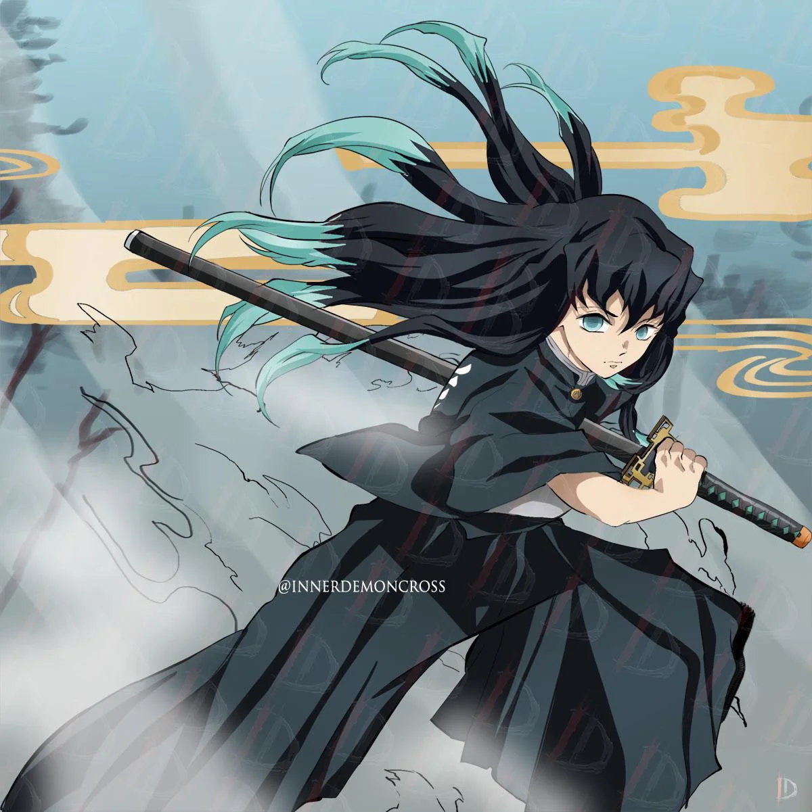
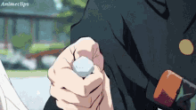
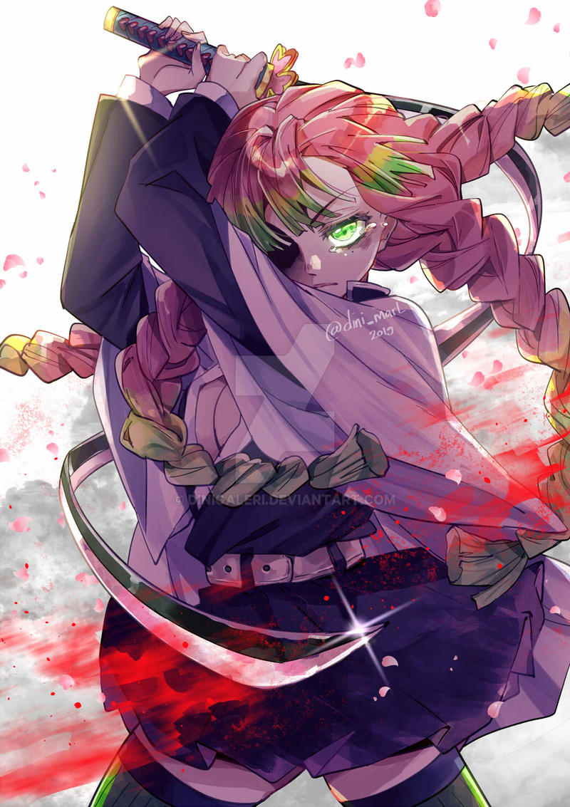
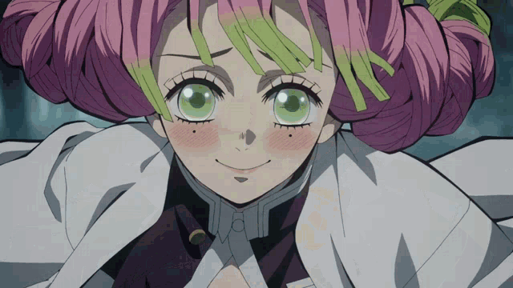
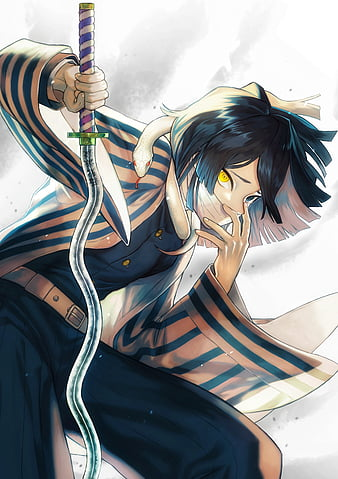
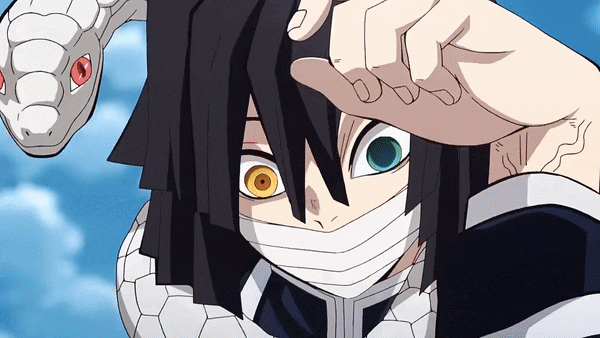

Muichiro Tokito - THE MIST PILLAR


He is the current Mist Hashira and uses the Mist Breathing.
He's an air-headed who seems to constantly wander off in thought and is unable to focus at anything.
He tends to think only for himself and operates on logic alone, never letting emotion guide him, making him seem apathetic and indifferent.
Despite his uncaring and unserious demeanor, he has been shown to get serious when it is required and is devoted to his position as the Mist Hashira.
As a child prodigy and the youngest Hashira at 14, he is incredibly talented despite his young age. It only took him 2 months to reach his Hashira status, something only Gyōmei accomplished.
Muichiro has extremely honed senses able to pick up things outside the normal range of perception, such as discerning the aura of a demon from a human.
As a Demon Slayer, Muichiro carries around a standard sized and shaped Nichirin katana that is white in color but is able to be dyed bright red with the help of his Demon Slayer Mark.
As a Hashira, Muichiro's katana has the words Destroy Demons engraved on the blade. His sword's hilt is rectangular with hollowed rectangles at each corner.
The white-colored blade symbolizes mist. His sword blends perfectly with the mist, making it easy to obscure his opponents during fights.
Mitsuri Kanroji - THE LOVE PILLAR


She is the current Love Hashira and uses the Breath of Love.
She is shy, kind to others and easily flustered.
Mitsuri is a very emotional, passionate, caring and jovial individual who constantly compliments people in her head.
However, despite her gentle and seemingly innocent demeanor, Mitsuri will show no mercy in the face of demons.
Mitsuri has a special muscular composition, making her muscles eight times denser than that of a regular human.
Mitsuri has been noted to possess an extremely flexible body, allowing her to achieve a wide range of motion. She eats as much as three sumo wrestlers.
Even though she is the slowest runner among all Hashira, she can use techniques even faster than the Sound Hashira.
Unlike most Demon Slayers who use standard katanas, Mitsuri wields an extremely thin, flexible, and long katana akin to a whip.
The pink colored blade symbolises love. The hilt is shaped like a 4 leaf clover with the words Destroyer of Demons engraved on the side.
Due to her sword's unique shape, Mitsuri folds her katana multiple times to properly sheathe it.
Obanai Iguro - THE SERPENT PILLAR


Obanai is the current Serpent Hashira and uses the Breath of the Serpent.
He is a very harsh and strict individual who shows no concern for those who do not abide by the Demon Slayer rules.
Despite his merciless personality, there are two people he cares deeply about: Kagaya Ubuyashiki and Mitsuri Kanroji.
He is more or less blind in his right eye, meaning he ascended to the rank of Hashira with one functioning eye.
This combined with his small physique and subpar physical strength holding him back makes it especially impressive that Obanai managed to attain Hashira status.
Having always been partially blind, he developed a combat technique utilizing his pet snake Kaburamaru who possesses a unique ability that allows him to read and predict a target's attacks and then relay that information to Obanai.
Obanai created himself the Stone Breathing Technique and mastered it. He also incorporated his pet snake Kabaramaru.
He carries around a heavily modified Nichirin katana with the sword's shape modeled into waves resembling a twisting snake, which is lavender in color.
The lavender colored blade symbolises snaked. The hilt has a gold circular shape engraved with two snakes connected by several plant-like patterns. The words Destroyer of Demons is engraved on the side.